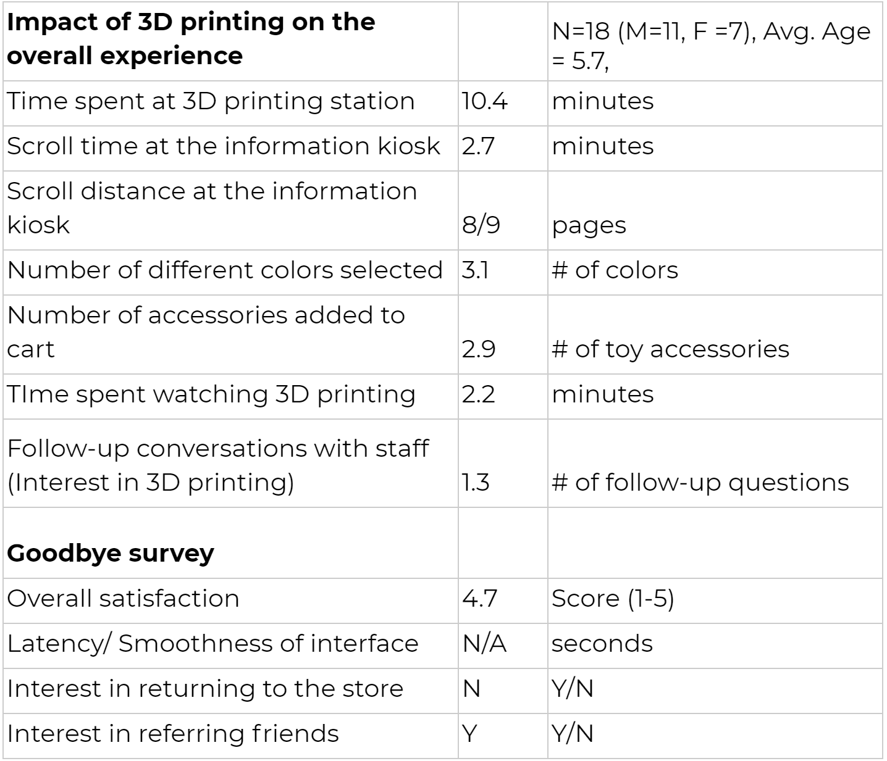

(Website)
My user testing went very smoothly and garnered useful feedback.
I tested my website on 7 people from fairly diverse backgrounds and perspectives. The reactions were all fairly positive and most people appreciated the design of the website. Everything was well organised and presented in a playful manner.
They understood that the site was a portfolio site, and could easily navigate to the work they were interested in. One user actually spent a good 10 minutes looking into all the work and engaging with the work. All the users spent an average of 3.745 minutes on the site.
The users all had either negative or mixed reactions to the “contact” page link, which automatically opened up an email client or site. They preferred a buffer page that allowed them to survey their options to connect with me before jumping, almost suddenly, to another application. They could all identify the feature when asked to navigate towards it, although only 50% of users actually navigated to the contact page.
All the users really liked the clean design along with the playful font choice. They felt like most of the work was organised in a consistent and easy to understand manner. They also liked the color palette used in the piece.
They also felt like accessing the résumé was difficult. To fix this I made the resume download button larger and more pronounced on the about page, changing it from the regular hyperlink it was before.
The users were also very engaged with the website and it’s content during the time they were using it, although when they lost interest, they left the site completely.
Most users visited at least 3 separate posts on the website, the contact page, the about page and the blog. They all navigated the site seamlessly and didn’t look for help during the experience.
This user testing helped me streamline the site and gave me confidence in the quality of my design.
Find the recordings here
(Product)
Our product is an interactive 3D printing terminal for kids ages 3-9. Our product lets a child and their parent come into Nutella’s storefront to customize and accessorize their Kinder toy using 3D printing. To begin, a parent will go to Kinder’s website to purchase the “Kinder Experience” for their child where they will be able to choose a theme (i.e. dinosaurs, space, etc.) and an available date/time. When the child and their parent arrive to Nutella store, an employee will give them an egg from the theme they chose. Within the egg, there will be a QR code that the child can they use when they arrive to the touch screen terminal. They will scan their QR code and confirm that their toy appears on the screen. The child will then begin to choose different accessories and different colors to 3D print. The child will be able to watch their new accessories get 3D printed right in front of their eyes. Once they are no longer engaged, they will have the opportunity to complete their “Kinder Experience” through chocolate tasting, story making, making chocolate, and learning about Kinder’s history.
Experiment(s):
Our target users for the terminal are kids ages 3-9. This age range varies widely in reading capabilities, therefore we wanted to create experiments surrounding our terminal using an application on an iPad with many visuals. To get feedback on our alpha prototype we tested our application with 18 kids between the ages of 3-9. We had 11 boys and 7 girls with an average of 5.7. As an incentive to get feedback on our prototype, we gave the kids Kinder eggs and Cornell Tech stickers.
When testing the application we wanted to collect several quantitative metrics such as time spent at the 3D printing station, scroll time on the app per screen, number of colors selected for accessories, number of toys added to cart, scroll distance, and number of clarifying questions asked.
In addition, we wanted to get qualitative results to see if the kid was enjoying using the app and creating accessories for a hypothetical kinder toy.
Results:

Takeaways:
There were several takeaways with testing our prototype with our target age range. Our previous testing before this had been done on parents. What we learned about testing on kids, is that they expected a lot more delivery than we anticipated. With adults we were able to tell them that at the end of the process a child would receive the selected 3D printed toys. However, when we were with the children the majority were disappointed they weren’t able to get the toy immediately after clicking and selecting options through our application. We believe this could have skewed our qualitative results, and that we will need to provide a more complete experience of the terminal to make sure children are satisfied with the 3D printed accessories.
From a design and UI/UX perspective, we were also curious to find that the children loved bright, contrasting colors on round buttons over square, sharp buttons. This observation was consistent with both Kinder (and Ferrero’s) existing branding and additional input from designers on campus. We also made sure that our participants had to go through a maximum of 4-6 screens through the entire process, freeing up their cognitive load and leading their creativity. We also wanted to align our application and accessories with Kinder’s existing designs and made sure that our designs (for the most part) remained platform independent so that Kinder had a host of hardware options and companies as partners. Interestingly, our participants found the 3D printing transfer process to be fairly intuitive and found the designated printer as well as their estimated printing time easily (within 30s).
We played a youtube video to determine how long a kid would watch something being 3D printed. We were surprised to find out that children were not willing to watch a toy being 3D printed for any longer than 3 minutes. However, we are worried that this didn’t simulate an actual 3D printer which they might have been engaged with longer. For next steps, we would like to bring children into the Maker Lab to get a better estimate for how long they would be engaged by watching a 3D printer print their toy in real time.
In addition, we were surprised that on average only 3-4 colors were selected as options for their accessories. This helps us determine how to proceed with selecting the number of different printers and styles (number of colors available per printer) we will need to have to accommodate the different colors selected. Once we narrow this down, we will be able to accurately determine printing time to suggest activities for the rest of the Kinder Experience.
We were also surprised to find out that children did not ask questions about how to use the application, instead they were more impatient about when they would be able to see and use their toy. They seemed to have no issue arriving to the next screens in the application for selecting accessories, adding them to their cart, and customizing the color.
Our biggest takeaway was that once the child had completed the experience on the app, they were not interested in using it again. However, we believe this might be due to the fact that they did not get the 3D printed toys right after. The Kinder Egg and Cornell Tech stickers were good incentives to get them to try our application, but did not fulfill their expectations. Surprisingly, we learned that when we asked them to rate their experience on a scale from 1 to 5 the majority gave a score of 5. Our takeaway from this is that we have reiteration work to add components that would make children want to go through the app again.
Next Steps:
Logical nexts steps for the team include:
- Building out the iPad application so that we can start testing V1.0 of the MVP for the Kinder Experience
- Iterating on excellent crit feedback i.e. building out the rest of the Kinder experience (that may or may not be technology centered) so that our product resonates with the Kinder brand
- Estimation and analysis for the active time spent, immersed in the experience, using existing data about attention span along with willingness to spend time at the Nutella store.
- Build out a check-in website that allows parents and children to book sessions (dummy sessions for the time being) at the kinder store. This would not only help us understand demand in such an experience, but also help help us price our products better
- Start extending our engagement with the Ferrero team (at Tata) and try to understand specifics of the Nutella store in New York City so that we can be prepared with store designs and layouts
- Research and possibly start conversations with 3D printing companies (preferably MakerBot) and requesting for developer API access so that we can seamlessly transfer prints from the iPad application onto the 3D printer
- Understand how we might want to print out accessories with multiple colors i.e. should we use 1 3D printer with multiple color wheels or use multiple printers to print out parts of different colors
- If we choose the latter, we need to be able to engineer an optimization algorithm that lets us optimize for wait times (for example if black is the most popular color, we need to distribute black accessories over multiple printers)